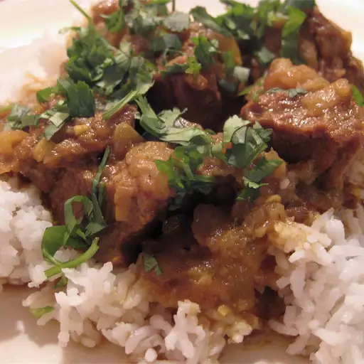

Beef Curry

Authentic beef curry from Bangladesh.
This spicy beef curry is best served with plain basmati rice or eaten with naan or pita bread.
Ingredients
- 2 pounds boneless beef chuck, cut into 1-1/2-inch pieces.
- 1 cup water.
- 1 onion, chopped.
- 5 green chile peppers, finely sliced.
Steps
- Heat olive oil in a skillet over medium heat.
- Stir in the garlic, green chiles, ginger paste, cardamom seeds, cloves, and cinnamon stick
- Simmer until most of the water has evaporated and the mixture has thickened.
- Stir in beef chuck pieces until coated with spice mixture; simmer over medium-low heat.